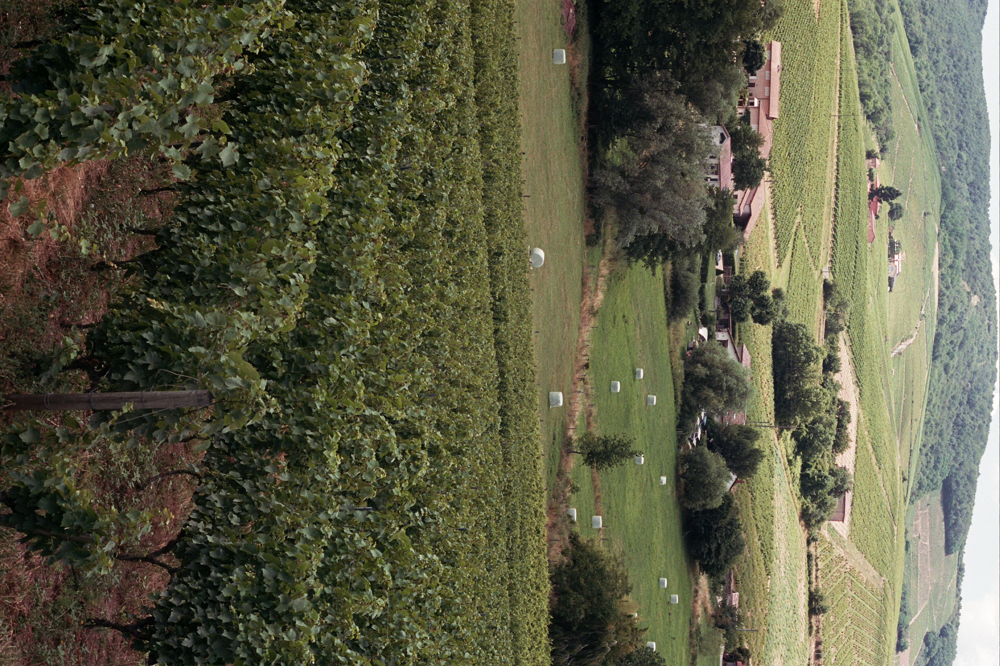

Winkel
Lantignié wijnen rechtstreeks van de wijnmaker. Afhalen of levering in België.
Bekijk onze wijnen →
Terroir
The trailer from Terroir (2025) by Stijn Verschelden. A sommelier student observes the work of winemakers around Lantignié for a year. The seasons change, and with them the colors, the sounds, the rhythm of nature and human activities.
Bekijk de film →